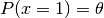
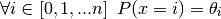

Categorical Data and the Dirichlet Discrete Distribution¶
Let’s consider some examples of data with categorical variables
import pandas as pd
import seaborn as sns
import numpy as np
import matplotlib.pyplot as plt
%matplotlib inline
sns.set_context('talk')
sns.set_style('darkgrid')
First, the passenger list of the Titanic
titanic = sns.load_dataset("titanic")
titanic.head(n=10)
| survived | pclass | sex | age | sibsp | parch | fare | embarked | class | who | adult_male | deck | embark_town | alive | alone | |
|---|---|---|---|---|---|---|---|---|---|---|---|---|---|---|---|
| 0 | 0 | 3 | male | 22 | 1 | 0 | 7.2500 | S | Third | man | True | NaN | Southampton | no | False |
| 1 | 1 | 1 | female | 38 | 1 | 0 | 71.2833 | C | First | woman | False | C | Cherbourg | yes | False |
| 2 | 1 | 3 | female | 26 | 0 | 0 | 7.9250 | S | Third | woman | False | NaN | Southampton | yes | True |
| 3 | 1 | 1 | female | 35 | 1 | 0 | 53.1000 | S | First | woman | False | C | Southampton | yes | False |
| 4 | 0 | 3 | male | 35 | 0 | 0 | 8.0500 | S | Third | man | True | NaN | Southampton | no | True |
| 5 | 0 | 3 | male | NaN | 0 | 0 | 8.4583 | Q | Third | man | True | NaN | Queenstown | no | True |
| 6 | 0 | 1 | male | 54 | 0 | 0 | 51.8625 | S | First | man | True | E | Southampton | no | True |
| 7 | 0 | 3 | male | 2 | 3 | 1 | 21.0750 | S | Third | child | False | NaN | Southampton | no | False |
| 8 | 1 | 3 | female | 27 | 0 | 2 | 11.1333 | S | Third | woman | False | NaN | Southampton | yes | False |
| 9 | 1 | 2 | female | 14 | 1 | 0 | 30.0708 | C | Second | child | False | NaN | Cherbourg | yes | False |
One of the categorical variables in this dataset is embark_town
Let’s plot the number of passengers departing from each town
ax = titanic.groupby(['embark_town'])['age'].count().plot(kind='bar')
plt.xticks(rotation=0)
plt.xlabel('Departure Town')
plt.ylabel('Passengers')
plt.title('Number of Passengers by Town of Departure')
<matplotlib.text.Text at 0x1029b9a10>

Let’s look at another example: the cars93 dataset
cars = pd.read_csv('https://vincentarelbundock.github.io/Rdatasets/csv/MASS/Cars93.csv', index_col=0)
cars.head()
| Manufacturer | Model | Type | Min.Price | Price | Max.Price | MPG.city | MPG.highway | AirBags | DriveTrain | ... | Passengers | Length | Wheelbase | Width | Turn.circle | Rear.seat.room | Luggage.room | Weight | Origin | Make | |
|---|---|---|---|---|---|---|---|---|---|---|---|---|---|---|---|---|---|---|---|---|---|
| 1 | Acura | Integra | Small | 12.9 | 15.9 | 18.8 | 25 | 31 | None | Front | ... | 5 | 177 | 102 | 68 | 37 | 26.5 | 11 | 2705 | non-USA | Acura Integra |
| 2 | Acura | Legend | Midsize | 29.2 | 33.9 | 38.7 | 18 | 25 | Driver & Passenger | Front | ... | 5 | 195 | 115 | 71 | 38 | 30.0 | 15 | 3560 | non-USA | Acura Legend |
| 3 | Audi | 90 | Compact | 25.9 | 29.1 | 32.3 | 20 | 26 | Driver only | Front | ... | 5 | 180 | 102 | 67 | 37 | 28.0 | 14 | 3375 | non-USA | Audi 90 |
| 4 | Audi | 100 | Midsize | 30.8 | 37.7 | 44.6 | 19 | 26 | Driver & Passenger | Front | ... | 6 | 193 | 106 | 70 | 37 | 31.0 | 17 | 3405 | non-USA | Audi 100 |
| 5 | BMW | 535i | Midsize | 23.7 | 30.0 | 36.2 | 22 | 30 | Driver only | Rear | ... | 4 | 186 | 109 | 69 | 39 | 27.0 | 13 | 3640 | non-USA | BMW 535i |
5 rows × 27 columns
cars.ix[1]
Manufacturer Acura
Model Integra
Type Small
Min.Price 12.9
Price 15.9
Max.Price 18.8
MPG.city 25
MPG.highway 31
AirBags None
DriveTrain Front
Cylinders 4
EngineSize 1.8
Horsepower 140
RPM 6300
Rev.per.mile 2890
Man.trans.avail Yes
Fuel.tank.capacity 13.2
Passengers 5
Length 177
Wheelbase 102
Width 68
Turn.circle 37
Rear.seat.room 26.5
Luggage.room 11
Weight 2705
Origin non-USA
Make Acura Integra
Name: 1, dtype: object
This dataset has multiple categorical variables
Based on the description of the cars93 datatset, we’ll consider
Manufacturer, and DriveTrain to be categorical variables
Let’s plot Manufacturer and DriveTrain
cars.groupby('Manufacturer')['Model'].count().plot(kind='bar')
plt.ylabel('Cars')
plt.title('Number of Cars by Manufacturer')
<matplotlib.text.Text at 0x114d9e6d0>

cars.groupby('DriveTrain')['Model'].count().plot(kind='bar')
plt.ylabel('Cars')
plt.title('Number of Cars by Drive Train')
<matplotlib.text.Text at 0x117554e50>

If our categorical data has labels, we need to convert them to integer id’s
def col_2_ids(df, col):
ids = df[col].drop_duplicates().sort(inplace=False).reset_index(drop=True)
ids.index.name = '%s_ids' % col
ids = ids.reset_index()
df = pd.merge(df, ids, how='left')
del df[col]
return df
cat_columns = ['Manufacturer', 'DriveTrain']
for c in cat_columns:
print c
cars = col_2_ids(cars, c)
Manufacturer
DriveTrain
cars[['%s_ids' % c for c in cat_columns]].head()
| Manufacturer_ids | DriveTrain_ids | |
|---|---|---|
| 0 | 0 | 1 |
| 1 | 0 | 1 |
| 2 | 1 | 1 |
| 3 | 1 | 1 |
| 4 | 2 | 2 |
Just as we model binary data with the beta Bernoulli distribution, we can model categorical data with the Dirichlet discrete distribution
The beta Bernoulli distribution allows us to learn the underlying
probability,  , of the binary random variable,
, of the binary random variable, 


The Dirichlet discrete distribution extends the beta Bernoulli
distribution to the case in which can assume more than two
states


Again, the Dirichlet distribution takes advantage of the fact that the Dirichlet distribution and the discrete distribution are conjugate. Note that the discrete distriution is sometimes called the categorical distribution or the multinomial distribution.
To import the Dirichlet discrete distribution call
from microscopes.models import dd as dirichlet_discrete
Then given the specific model we’d want we’d import
from microscopes.model_name.definition import model_definition
from microscopes.irm.definition import model_definition as irm_definition
from microscopes.mixture.definition import model_definition as mm_definition
See Defining Your Model to learn more about model definitions